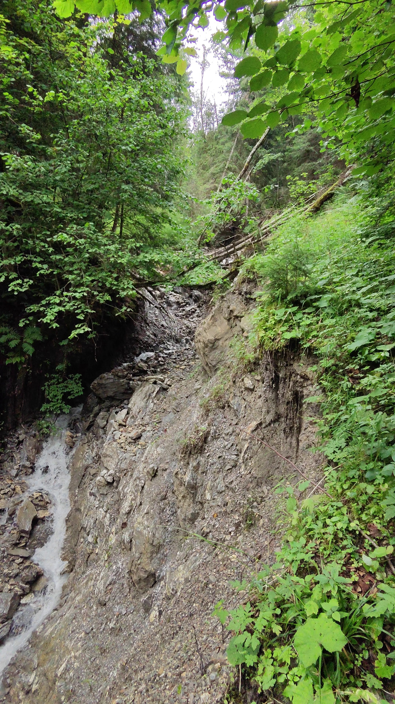

Trassenvarianten Prüfung St. Johann - Alpendorf im Bereich 'Gut Berg' und 'Nilgraben'
Datum: 14-08-2025 Datum der Begehnung: 04-08-2025 Untersuchungsgebiet: St. Johann - Alpendorf, 'Gut Berg', 'Nilgraben' Teilnehmende Personen: Kay Cichini, Franz-Josef Resch Dokumentation: Kay Cichini
Begehungsstatistik
- Gesamtbilder: 19 - Dokumentierte Strecke: 1.14 km (Luftlinie zwischen Aufnahmepunkten) - Koordinatensystem: WGS84 (GPS)
Zielsetzung
Überprüfung einer möglichen Trassenvariante (als Alternative zu den Trassenvorschlägen von AEP, geändert durch Cichini, Stand vom 25. März 2025, abgeändert am 2. Juni 2025) auf der westlichen Seite des Nilgrabens (s. Abb. 1). Gleichzeitig Überprüfung des bestehenden Trassenvorschlages (AEP, Cichini) im Bereich unterhalb Hotel Stern (zwei Straßenquerungen unterh. Hotel Stern sollten bestmögilch vermieden werden).
Methodik
Vorbereitung des Routenvorschlags auf digitaler Basis (im GIS mit Geländemodell, hochauflösenden Orthofotos, Längsgefällemessungen auf DEM-Basis mit Festlegung bestmöglicher Routenabschnitte, siehe Abb. 1), Anfahrt ins Gebiet mittels PKW bis zum Ausgangspunkt, Begehung mit Geländeevaluierung und Beurteilung geologischer und naturschtzfachlicher Voraussetzungen. Hangneigungsmessung mit Suunto PM-5/360 PC Clinometer, Fotografie mit GPS-tagging, GPX Aufzeichnung der Begehungsroute.
Ergebnis & Schlussfolgerungen
Varianten Vorschlag Gut Berg / Nilgraben
Von einer Querung des Nilgrabens ist dringend abzuraten. Ersten sind die Einhänge östlich und westlich des Taleinschnittes durchwegs steil und stellenweise sehr steil (35-40°) und instabil - v.a. östlich ist der Einhang von Erosiosnrinnen durchzogen. In der Senke des Tales befinden sich großflächige Quellbereiche und Quellbäche, im westlichen Bereich der Senke sind zwei tiefe und stark von Seitenerosion betroffene Gräben vorhanden. Nicht nur die vorgenannten Geländeigenschaften, die eine Bebaung extrem erschweren würden, sondern auch der hier vorgefundene Lebensraum bzw. Pflanzenbestand (Quell-, Bach-, bzw. Hochstaudenfluren, Grauerlenwald, Schluchtwald, ..) würde aus nautruschutzfachlicher Sicht eine unüberwindbare Hürde darstellen.
Ergänzung zu Bereich unterhalb Hotel Stern
Unterhalb dem Hotel Stern könnten problemlos 2-3 Kehren im östlichen Pistenrand angelet werden. Im Gegensatz zum Trasssenvorschlag AEP, geänder durch Cichnin März 25, könnten somit unötige Straßenquerungen vermieden werden.
Fotodokumentation
Abb. 1: Übersicht, grün - GPX-Track der Begehung, pink - Variantenvorschlag, rote Kreise - Kontrollpunkte, rotes Polygon - zu meidende Gst, rechts der Piste - Trassenvorschlag AEP, bzw. Variante Cichini 24.07.25Abb. 2: Erste steile Hangquerung nach 'Berg Gut' mit mehrern Gräben (Aufnahmezeitpunkt: 13:43, Seehöhe: 896 m)Abb. 3: Erste steile Hangquerung, immer wieder Hangerosion vorhanden (Aufnahmezeitpunkt: 13:44, Seehöhe: 898 m)Abb. 4: Erste steile Hangquerung, immer wieder Quellaustritte (Aufnahmezeitpunkt: 13:45, Seehöhe: 900 m)Abb. 5: Erste steile Hangquerung, wiedeholt tiefe Erosionsrinnen (Aufnahmezeitpunkt: 13:46, Seehöhe: 904 m)Abb. 6: Erste Querung des 'Nilgrabens', mehrere Quellbäche und großflächige Hochstaudenflur mit Riesenschachtelhalm und Grauerelenwald (Aufnahmezeitpunkt: 13:57, Seehöhe: 914 m)Abb. 7: Querung des 'Nilgrabens', großflächige Hochstaudenflur mit Riesenschachtelhalm und Grauerelenwald (Aufnahmezeitpunkt: 14:02, Seehöhe: 925 m)Abb. 8: Querung des 'Nilgrabens', mehrere tiefe Erosionsrinnen (Aufnahmezeitpunkt: 14:04, Seehöhe: 926 m)Abb. 9: Querung des 'Nilgrabens', mehrere kleinere Erosionsrinnen (Aufnahmezeitpunkt: 14:05, Seehöhe: 927 m)Abb. 10: Querung des 'Nilgrabens', 1 von zumindest 3 tiefen Erosionsrinnen (1 bis mehrere Meter eingetieft, Aufnahmezeitpunkt: 14:09, Seehöhe: 930 m)Abb. 11: Querung des 'Nilgrabens', 1 von zumindest 3 tiefen Erosionsrinnen (1 bis mehrere Meter eingetieft, Aufnahmezeitpunkt: 14:10, Seehöhe: 932 m)Abb. 12: Steiler, zT. felsdurchsetzter Hangbereich westlich des Nilgrabens (Aufnahmezeitpunkt: 14:15, Seehöhe: 951 m)Abb. 13: Steiler Hangebereich westlich des Nilgrabens mit schluchwaldartigem Charakter (Aufnahmezeitpunkt: 14:19, Seehöhe: 964 m)Abb. 14: Steiler, zT. felsdurchsetzter Hangbereich westlich des Nilgrabens (Aufnahmezeitpunkt: 14:20, Seehöhe: 973 m)Abb. 15: SteilerHangbereich westlich des Nilgrabens, mit altem Bestandsweg (Aufnahmezeitpunkt: 14:25, Seehöhe: 1002 m)Abb. 16: Blick auf die Hauptrinne des Nilgrabens, v.a. im Randbereich mit vielen entwurzelteb Bäumen (Aufnahmezeitpunkt: 14:26, Seehöhe: 996 m)Abb. 17: Zweite Querung des Nilgrabens, wieder mit Quellen, Hochstaudenfluren und Grauerlenbestand (Aufnahmezeitpunkt: 14:29, Seehöhe: 989 m)Abb. 18: Kontrollpunkt für Trassenvorschlag AEP/CICHINI in der Straßenkehre unterh. dem Hotel Stern - eine künstliche Abflussrinne zur Ableitung von Oberflächenwässer der Straße (Aufnahmezeitpunkt: 14:50, Seehöhe: 993 m)Abb. 19: Kontrollpunkt für Trassenvorschlag AEP/CICHINI in der Straßenkehre unterh. dem Hotel Stern - geringes Platzangebot für angedachte Rodelbahnkehre, sollte aber baulich möglich sein (mit entsprechenden Böschungssicherungen Aufnahmezeitpunkt: 14:52, Seehöhe: 992 m)
- Dokumentformat: A4 PDF
- Bildformat: .jpg
- Koordinatenquelle: GPS-Daten in Dateinamen
- Datumsquelle: Datum u. Uhrzeit in Dateinamen
- Bilder Sortierung: Chronologisch